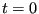

Next: Equilibration and Decorrelation Up: Case Study 2: Static Previous: Case Study 2: Static
The code mdlj.c was run on 108 particles with positions initialized
on a simple cubic lattice at a density  = 0.8442 and temperature (specified by
velocity assignment and scaling) initially set at
= 0.8442 and temperature (specified by
velocity assignment and scaling) initially set at  = 0.728. A
single run of 600,000 time steps was performed, which took about 2
minutes on my laptop. (This is almost 10
= 0.728. A
single run of 600,000 time steps was performed, which took about 2
minutes on my laptop. (This is almost 10 particle-updates per
second; not bad for a laptop running a silly
particle-updates per
second; not bad for a laptop running a silly  pair search, but
it's only for
pair search, but
it's only for  100 particles...the same algorithm applied to 10,000
would be slower.)
The commands I issued looked like:
100 particles...the same algorithm applied to 10,000
would be slower.)
The commands I issued looked like:
$ mkdir md_cs2 $ cd md_cs2 $ ../mdlj -N 108 -fs 1000 -ns 600000 -rho 0.8442 -T0 0.728 -rc 2.5 -traj traj1.xyz -prog 100 >& 1.out & $ tail -f 1.out 468900 468.90000 -475.45590 242.36056 -233.09534 -2.79034e-04 1.49605 5.43064 469000 469.00000 -475.67663 242.58353 -233.09310 -2.88639e-04 1.49743 5.11914 469100 469.10000 -477.58731 244.49557 -233.09175 -2.94452e-04 1.50923 4.88396 469200 469.20000 -457.41152 224.32176 -233.08975 -3.02989e-04 1.38470 5.82717 469300 469.30000 -492.03036 258.93556 -233.09481 -2.81326e-04 1.59837 4.82093 469400 469.40000 -465.44072 232.34350 -233.09723 -2.70947e-04 1.43422 5.69688 469500 469.50000 -478.52166 245.42514 -233.09652 -2.73957e-04 1.51497 5.01491 469600 469.60000 -469.00769 235.90985 -233.09784 -2.68307e-04 1.45623 5.64466 469700 469.70000 -476.27992 243.18354 -233.09637 -2.74603e-04 1.50113 5.34172 469800 469.80000 -461.91910 228.82734 -233.09176 -2.94382e-04 1.41251 5.68907 469900 469.90000 -469.00227 235.90429 -233.09798 -2.677^CThe final
\& puts the simulation “in the background,” and returns
the shell prompt to you. The tail -f command allows you to “watch” as the log file is written to. You can also verify that the job is running
by issuing the “top” command, which displays in the terminal the
a listing of processes using CPU, ranked by how intensively they are
using the CPU. This command “takes over” your terminal to display
continually updated information, until you hit Ctrl-C.
top - 13:43:27 up 4 days, 6:19, 0 users, load average: 0.16, 0.45, 0.28
Tasks: 29 total, 2 running, 27 sleeping, 0 stopped, 0 zombie
%Cpu(s): 12.7 us, 0.0 sy, 0.0 ni, 83.3 id, 0.0 wa, 0.0 hi, 4.0 si, 0.0 st
MiB Mem : 12608.9 total, 11169.1 free, 739.2 used, 700.7 buff/cache
MiB Swap: 4096.0 total, 4096.0 free, 0.0 used. 11616.8 avail Mem
PID USER PR NI VIRT RES SHR S %CPU %MEM TIME+ COMMAND
14668 cfa 20 0 6652 1268 1116 R 100.0 0.0 0:02.83 mdlj
13073 cfa 20 0 863448 47256 28728 S 6.7 0.4 0:19.24 node
1 root 20 0 1020 648 520 S 0.0 0.0 1:29.57 init
8 root 20 0 888 76 16 S 0.0 0.0 0:00.00 init
9 root 20 0 888 76 16 S 0.0 0.0 1:04.20 init
10 cfa 20 0 10164 4980 3188 S 0.0 0.0 0:00.11 bash
168 root 20 0 984 172 16 S 0.0 0.0 0:00.00 init
From the command line arguments shown above, we can see that this
simulation run will produce 601 snapshots, beginning with  and
outputting every 1000 steps. Each frame has 108 lines of 69 bytes each, plus
another 30 for the header in each frame, so basically every frame is 7,482 bytes. With 601 of them, that is 4,496,682 bytes, or 4.2884 megabytes (1 megabyte is 1,048,576 bytes). We can confirm this calculation using the du (disk usage) command:
$ du -sh traj1.xyz 4.3M traj1.xyzThirty years ago, one might have raised an eyebrow at this; nowadays, this is very nearly an insignificant amount of storage.
cfa22@drexel.edu